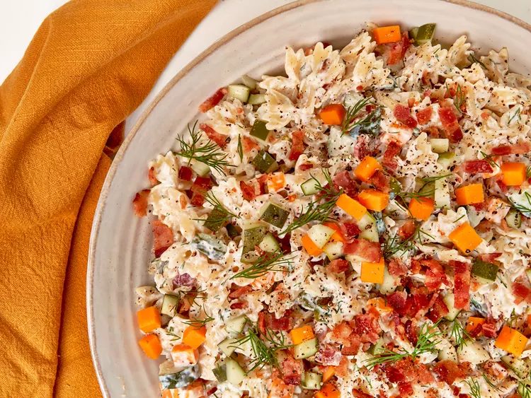

Dill Pickle Pasta Salad

his dill pickle pasta salad with chopped dill pickles, bacon, and Cheddar cheese is briny, rich, salty and absolutely delicious.
Ingredients
- 1 pound short pasta, such as mini bowtie pasta
- 10 slices bacon, cooked crisp and crumbled, divided
- 1 1/2 teaspoons kosher salt
- 2 cups chopped refrigerated dill pickles, plus 1/3 cup pickle brine, divided
- 2 tablespoons chopped fresh dill, plus more for garnish
- 1 cup 1/4-inch diced sharp Cheddar cheese
- 2/3 cup mayonnaise
- 2/3 cup sour cream
- 1 teaspoon freshly ground black pepper
- 1 teaspoon onion powder
Directions
- Bring a large pot of water to a boil. Add 2 tablespoons salt and pasta to water and cook, stirring often, until pasta is al dente, 9 to 10 minutes. Drain and rinse with cold water just enough to bring the pasta to lukewarm or room temperature. Drain well.
- Meanwhile, place bacon in a large skillet and cook over medium-high heat, turning occasionally, until evenly browned, about 10 minutes. Drain bacon slices on paper towels.
- Add pasta to a large bowl. Reserve 1 tablespoon chopped pickles, 1 teaspoon dill, and 1 tablespoon bacon for garnish. Add cheese and remaining pickles, dill, and bacon to the pasta bowl.
- In a separate bowl, whisk together remaining 2 teaspoons salt with pickle brine, mayonnaise, sour cream, black pepper, and onion powder until well combined. Pour mixture over pasta mixture and toss well to coat. Transfer mixture to a serving bowl and top with reserved pickles, dill, and bacon. Serve immediately or refrigerate until ready to serve.